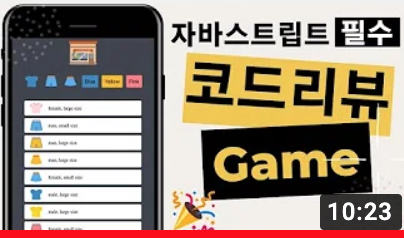
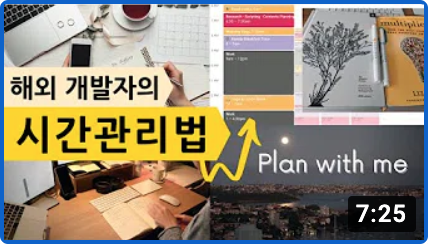
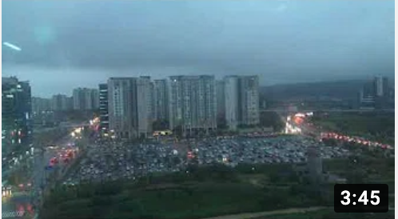

Youtube
#DreamCoding
#DreamCoders
#Ellie
Clone Coding: Youtube Mobile Website 유튜브 모바일 웹사이트 따라 만들기 | 프론트엔드 개발자 입문편: HTML, CSS, Javascript 드림코딩과 함께하는 프론트엔드 실전 입문편
1M views 1 month ago
1K
0
Share
Save
Report
sundlee
1M subscribers
subscribe
Up next

자바스크립트를 이용한 미니게임 만들기 & 코드 리뷰, 코딩 팁
드림코딩 by 엘리
82K views

시간관리 ⏰ 일주일의 시작은 일요일 저녁부터?
드림코딩 by 엘리
44K views

R&D 센터 남측 창문에서 찍은 타임랩스 (2016년 7월 4일 저녁)
sundlee
2K views